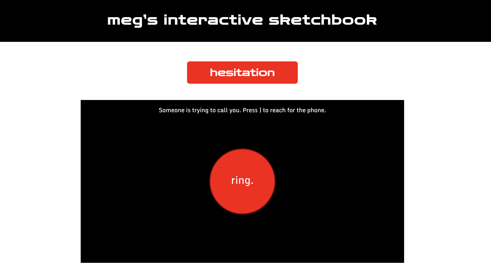
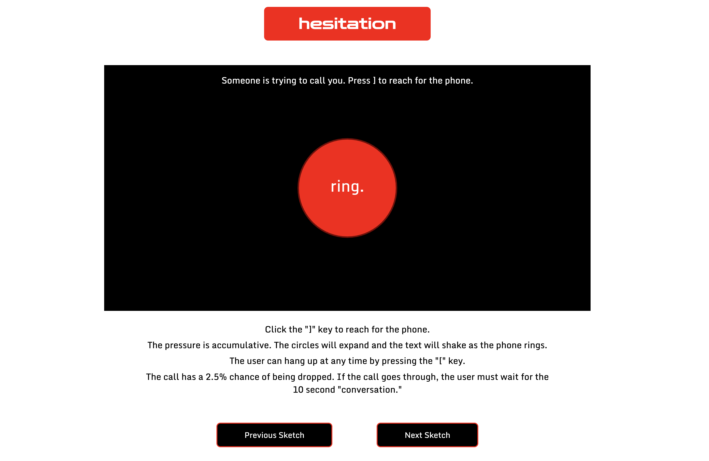
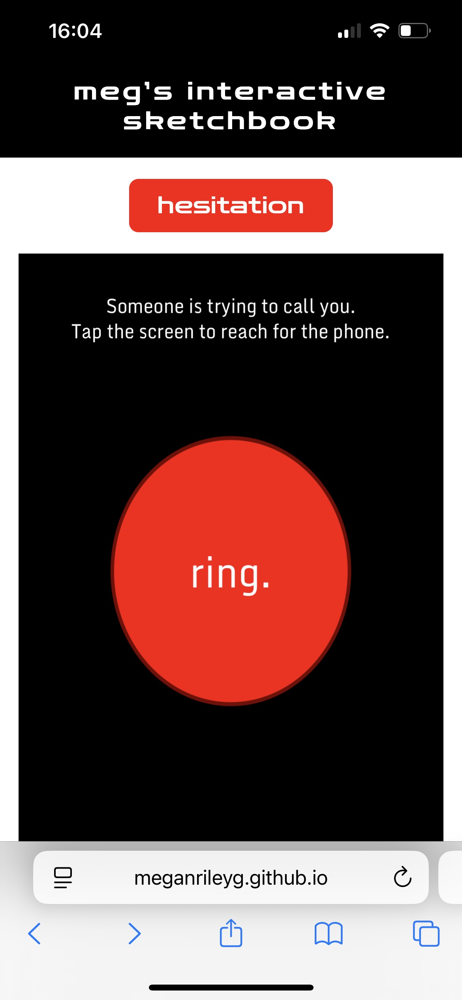
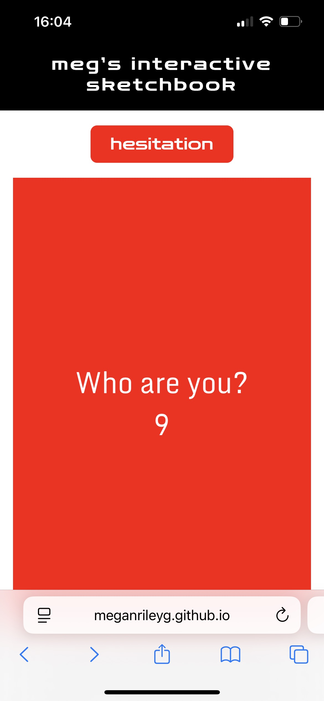

Click Here for Live Sketchbook Link




The desktop version of my interface translated cleanly from my figma wireframing. The canvas and interaction is big enough to be seen, but the instructions are still easily navigable. The only difference is instead of a header or drop down menu like the ones included in my wireframing, there is now a smaller and less distracting “back” button for the user. At the bottom of the page are two navigation arrows, which ideally would allow the user to scroll between sketches and assignments, but as of now only redirect the user back to the main page of the sketchbook. The instructions at the top of the canvas were finicky as well, and often would jump around. Eventually, I was able to get the instructions to stay toward the top of the canvas in both the desktop and mobile format.
The overall mobile format, however, was more difficult to work out. The layout resembles the mobile wireframes, though there are some small issues that have not been resolved. The mobile interaction allows for tapping instead of key pressing functions, so as not to require the keyboard in order for the user to interact with the system. However, the interface has trouble and every instance of touch triggers the interaction. The interface on mobile cannot scroll, so the instructions are not visible except for the basic instructions that appear at the beginning of the interaction on the canvas. This ends up making the mobile interface more minimal, but may be visually superior anyway. The mobile coding assumes that the only interaction the user has with the interface is to tap the canvas, as opposed to other navigations, which can be frustrating. The menu button is not included on the mobile version, as it was obstructive to both the header of the website and the sketch. Ideally, there would be a way to get back to the menu on the mobile sketch, but I wanted the interaction to be front and center with minimal distraction, so the navigation arrows of whatever mobile browser is being used will have to act as a “back” button to the menu.
Overall, I am very impressed with the desktop system. I am surprised at how close I was able to get to my wireframes. I wish I had been able to implement a working drop down menu, but the back button at the top will have to be enough for easy reversal of action for the users. Since I have no prior coding experience, I am proud at how well it came to fruition and how I was able to overcome most obstacles. As for the mobile system, it is pretty minimal, but still functioning. My main goal was to get the mobile sketch to function by tapping the screen as opposed to having to press the bracket keys like in the desktop system. I was able to get this function to work, so I am overall happy with it, though there are small things that I would prefer to be different. These include the implementation of easier navigation buttons, and the ability to scroll without getting stuck in the system. Despite all of this, I am pleasantly surprised with the level of code I was able to achieve between both the desktop and the mobile versions of the interaction. I feel the final implementation is a solid reflection of the improvements I have made in this class, and my gradual understanding of the subject.